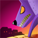

You're a wolf and you've been bad. That's why you've been put in the deepness of a hell plagued with your most hated enemies: the sheep! But they're not normal sheep. No... They're possessed demonic sheep and won't hesitate to try to kill you!
So run! Defend yourself! Because, after all, a wolf is by nature a predator, not a prey.
Break through the dungeons, solve challenges and escape this hell... If you can!
This game was originally planned by {{page.rtypex}} and me as a doable project for a home made game jam that we did on March 25th, 2013. The goal was to, at least, try to finish it. But if we didn't, it would have been ok anyway. No pressures. My job consisted in programming: procedurally generate rooms, track challenges, create enemy behaviours, fine tune character controls... It lasted 3 days and was difficult and intensive, but in the end we had a playable thing, something that could be called a game. We were quite proud of ourselves, but the project needed some more love and adjustments.
After a well-deserved rest, we retook it and started working on it in our spare time. As we approached the beta phase, we had the honor of working with {{page.atic2a}}, an independent two-man music and sfx studio. They made a splendid work! Meanwhile I fixed many bugs and added some new features, {{page.rtypex}} made some last-minute art and we all did some playtest here and there. Suddenly a Gold Master arrived, just in time for the new year. So I packed everything and, well, distributed it.
We don't know how well it's going to sell, but the main objective was to finish the game, and yeah, we did it. A big hug to you, workmates!